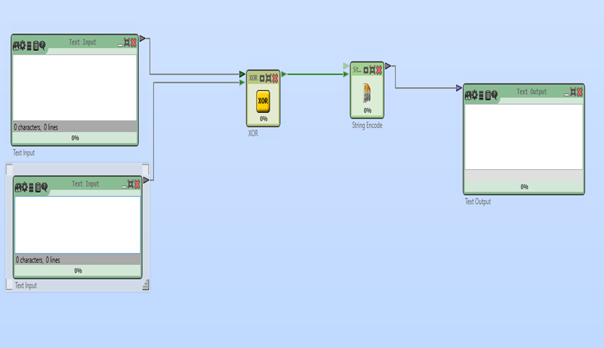
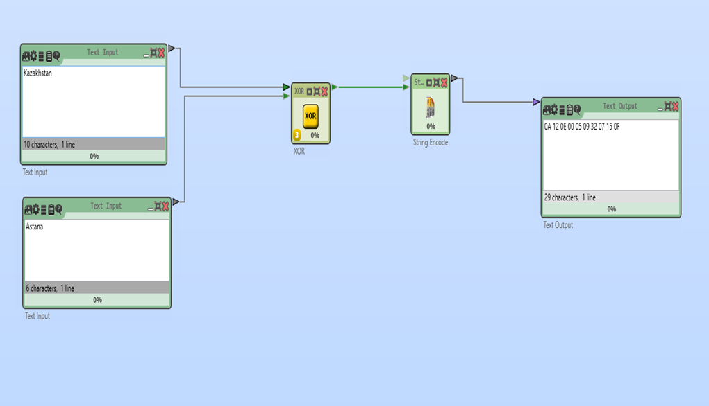

ГАММАЛАУ АРҚЫЛЫ ШИФРЛАУ (ЕКІЛІК МОДУЛЬ, UTF-8)
Cryptool 2 (CT2) — криптографиялық әдістерді зерттеу мен оқытуға арналған бағдарламалық орта.
XOR (қосылу немесе: eXclusive OR) – симметриялық шифрлау әдістерінің бірі. Бұл әдіс ашық мәтін мен кілттің биттерін XOR операциясы арқылы біріктіріп, шифрланған мәтінді алу үшін қолданылады.
Бұл жерде біз XOR операциясын пайдаланып, мәтінді шифрлау процесін қарастырамыз.
1. Жаңа жобаны бастау
Home → Жаңа (New) таңдаңыз. Жаңа жұмыс кеңістігі (Workspace) ашылады.
Қажетті блоктарды жобаға қосамыз:
- Text Input (2 дана, біреуі шифрланатын мәтін, екіншісі кілт (гамма))
- Text Output (Шифрланған мәтінді алу)
- XOR (XOR блогы)
- String Encoder (Жолды кодтау)
Text Input (Мәтін енгізу)
Мақсаты: Қолданушы енгізетін ашық мәтінді немесе кілт (гамма) сақтау.
Сипаттамасы:
- Бірінші "Text Input" блогы – шифрланатын ашық мәтінді енгізу үшін қолданылады.
- Екінші "Text Input" блогы – XOR операциясы үшін кілт (гамма) мәнін енгізуге арналған.
- Егер кілт ұзындығы мәтіннен қысқа болса, ол автоматты түрде қайталанып қолданылады.
XOR (XOR блогы)
Мақсаты: XOR операциясы арқылы шифрлау немесе дешифрлау.
Сипаттамасы:
- XOR операциясы бит деңгейінде орындалады, яғни ашық мәтін мен кілттің әрбір биті XOR (^) логикалық операциясы арқылы біріктіріледі.
- Егер дәл сол кілтпен шифрланған мәтінге қайтадан XOR қолданылса, бастапқы мәтін қалпына келеді.
- Бұл әдіс гаммалық шифрлауда және кейбір қарапайым криптографиялық алгоритмдерде қолданылады.
String Encoder (Жолды кодтау)
Мақсаты: Мәтінді басқа кодтау форматына айналдыру (мысалы, біздің тапсырмамызда 16-форматқа).
Сипаттамасы:
- XOR операциясы жиі биттік деңгейде жұмыс істейтіндіктен, нәтижені оқылатын форматқа айналдыру қажет.
- String Encoder блогы XOR шифрланған мәтінді адам оқи алатын кодтарға (мысалы, Base64 немесе HEX) түрлендіреді.
- Бұл процесс шифрланған деректерді сақтау немесе тасымалдау кезінде ыңғайлы.
Text Output (Мәтін шығару)
Мақсаты: Шифрланған немесе дешифрланған мәтінді көрсету.
Сипаттамасы:
- Бұл блок XOR блогынан шыққан нәтижені немесе кодталған жолды көрсету үшін қолданылады.
- Қолданушы нәтижені көшіріп, басқа жерге енгізе алады.
ЕСКЕРТУ
ЕГЕР XOR ШИФРЛАУЫНДА САНДАР (BIN НЕМЕСЕ HEX) ҚОЛДАНЫЛСА, STRING DECODER (ЖОЛДЫ ДЕКОДТАУ) БЛОГЫ ҚАЖЕТ БОЛУЫ МҮМКІН.
СЕБЕБІ, TEXT INPUT (МӘТІН ЕНГІЗУ) БЛОГЫ ТЕК МӘТІНДІК ФОРМАТТАҒЫ ДЕРЕКТЕРДІ ЕНГІЗУГЕ АРНАЛҒАН.
2. Блоктарды суреттегідей байланыстыру

3. Мәндерді енгізіп нәтижені көру
"Play" (▶) түймесін басып, шифрлау нәтижесін қараңыз.

"Kazakhstan" сөзін "Astana" гаммасымен шифрлап,
"0A 12 0E 00 05 09 32 07 15 0F"
шифрланған мәтінін алдық. Бұл HEX түріндегі шифрланған мәлімет.
Қорытынды
- XOR – жылдам және жеңіл шифрлау әдісі.
- Cryptool 2-де бұл әдісті оңай қолданып, шифрлау және дешифрлау процесін көрнекі түрде тексеруге болады.
Практикалық тапсырма
1-тапсырма: Шифрлау
Өз есіміңізді XOR әдісін қолданып шифрлаңыз.
2-тапсырма: Дешифрлау
Мысалдағы "0A 12 0E 00 05 09 32 07 15 0F" шифрланған мәтінін дешифрлайтын бағдарлама құрыңыз.
3-тапсырма: Шифрлау
"Криптография" сөзін шифрлаңыз.